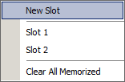

Memorize Plot(s)
Memorize Plot(s)
Navigation: OptiLayer Menu Commands > View Menu >
Memorize Plot(s)
` <idh_collection.html>`__ ` <idh_menu_view.html>`__ ` <variator.html>`__
The “Memorize” submenu allows you to store any plot for further comparison with another plot or plots. This feature enables you to save plots for reference and comparison purposes.

The “New Slot” command stores the current plot in temporary memory. The stored plot will blink twice to indicate that it has been successfully saved.
The “Slot 1, Slot 2, …” commands allow you to store the current plot or plots by replacing already stored plots in temporary memory.
The “Clear All Memorized” command clears all temporary plots that have been saved.